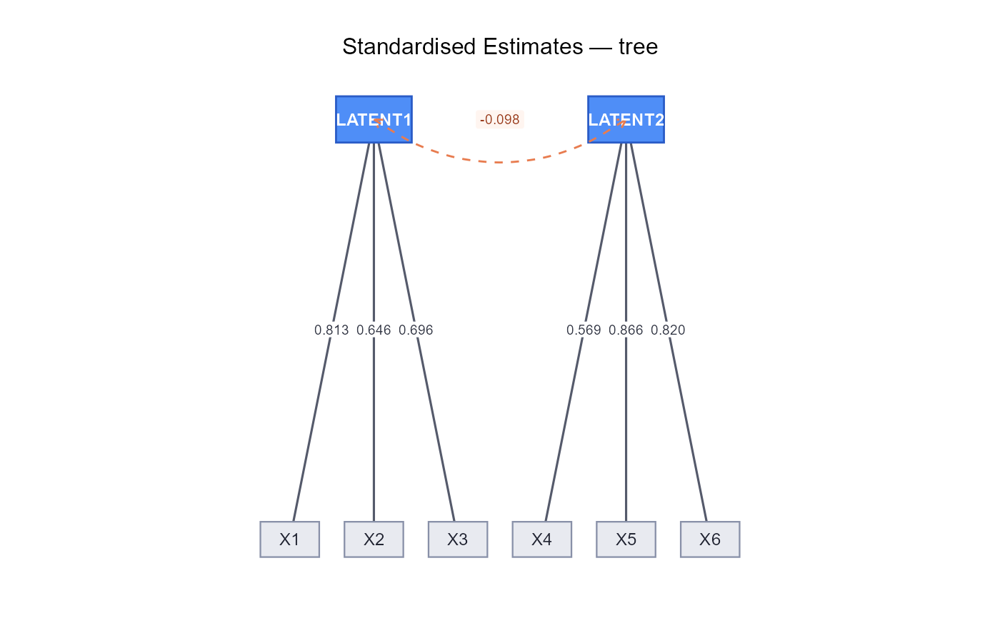
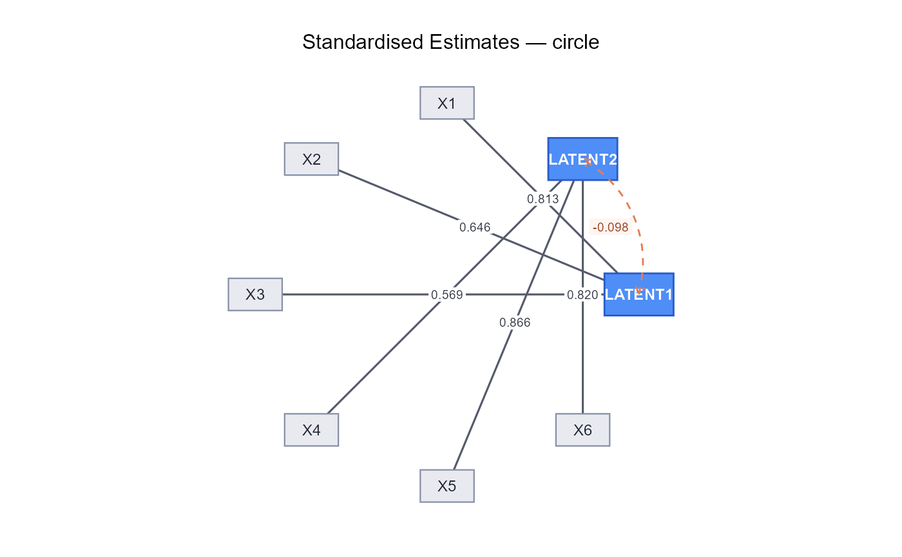
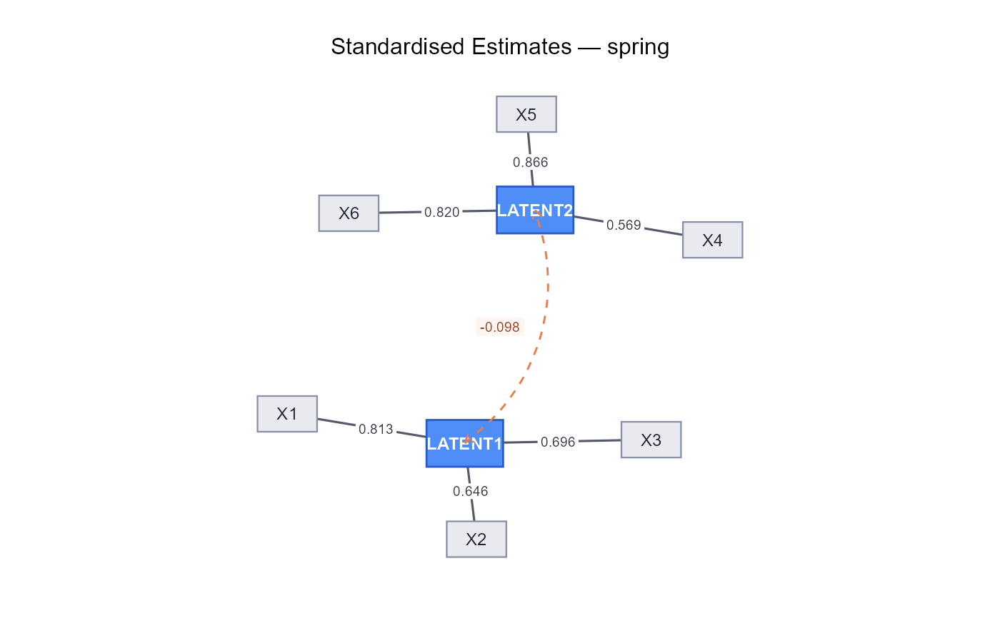

Plot CFA model (semPlot-free)
Arguments
- model
A fitted lavaan object
- what
One of "std" (standardized), "est" (unstandardized), or "eq" (parameter labels)
- layout
One of "tree", "circle", or "spring"
- label_size
Size of node labels
- edge_label_size
Size of path coefficient labels
- color_latent
Fill colour for latent variable nodes
- color_observed
Fill colour for observed variable nodes
- ...
Ignored (kept for API compatibility with plot_cfa)
Examples
model='LATENT1=~X1+X2+X3
LATENT2=~X4+X5+X6'
df<-lavaan::simulateData(model=model,model.type="cfa",
return.type="data.frame",sample.nobs=100)
df<-generate_missing(df)
fit<-lavaan::cfa(model,data=df,missing="ML")
plot_cfa_gg(fit,what="std")
 plot_cfa_gg(fit,what="std",layout="tree")
plot_cfa_gg(fit,what="std",layout="tree")

plot_cfa_gg(fit,what="std",layout="circle")

plot_cfa_gg(fit,what="std",layout="spring")
